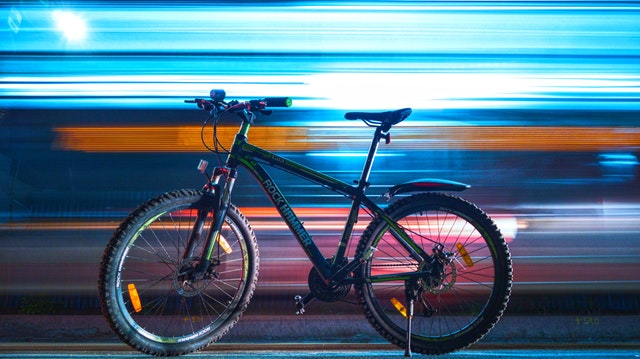

Browse
Find your next favorite ride
Connect
Meet up and create new and exciting experiences
Enjoy Iconic Island Time Between Pedal Strokes
Nanaimo, the scenic ferry gateway to the Central and North Island, offers unbelievable riding in a short drive straight off the ferry. Recent trail developments, including the fast and flowy Finer China, plus the must-visit Stevie Smith Bike Park, are proof that this harbour community is committed to catering nothing but good times and progression opportunities to riders of all ages and abilities. Mt. Benson, Doumont and Westwood offer up the thick-forested backdrop to town and are the go-to locations for classic downhill descents and heart-pounding single track.
Only 30-minutes from Comox and Courtney, you’ll find Mount Washington Alpine Resort - towering 1917 metres above sea level and boasting a 14-trail bike park that delivers a gnarly ride for all levels. Alpine and ocean vistas fall away to big and burly machine-made trails that personify flow and fun. Take a break from uphill grunts and treat yourself to luxurious, lift-serviced riding that maximizes the daring descent. Perfect berms and a generous mix of trails welcome riders from July through September. Epic events, Bike-and-Stay deals and post-ride brews are standard at Mount Washington so grab your posse and head to the Island’s alpine today.

Gabriola is a classic, ultra-laid back, hippie-influenced smaller island off the Island. A short, 20-minute ferry ride from Nanaimo brings you to this riding oasis, where the only other people you may see on the trails are the posse you brought with you on the road trip! This is an XC island, where approximately 20 trails can be found on the central and western sides of Gabriola. The best way to discover these local riding nuggets are through tour companies that offer a variety of fun group rides that cater to all riding abilities. In between laps, check out the local artisan flavour and pick up that one-of-a-kind gift you’ve been promising mom!